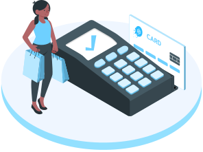

Instantly Convert Crypto to Fiat
Ever thought that why can’t you use your crypto regularly just like cash? What use is Cryptocurrency if it can’t be utilised in everyday world?
For most people, Crypto is a way of investment to earn profits. No doubt, Crypto is, indeed, an emerging industry in itself and not much popular in developing nations with huge populations. But the essence of transactional freedom is somewhat
still restricted, mainly with personal and non-public business dealings.
And Hova aims to play its part in the Crypto revolution by making it accessible to all, synchronous with our modus operandi. Along with the other services like Paying with Biometrics, Crypto Kiosk, Crypto-to-Home, HovaDEX and Freelancer
Platforms, Hova introduces its own system enabling a user to make payments in fiat as well as crypto using a same debit card.
This technology was conceived as a solution to bring the digital currency and benefits of decentralised finance
in the pockets of a common man, who doesn’t need to think twice before investing in Crypto. Fiat money indeed, plays an important role and our unique Crypto cards use advanced AI algorithms to instantly convert your digital currency to pay
wherever required as regular plastic currency. This is done by our highly capable Decentralised Exchange that works behind the curtains ensuring you get a hassle-free travel around the world, keeping your investments safe, secure, and most
importantly usable with Hova.
Nevertheless, John knew his investments with Hova were still safe with him and that he didn’t even need to carry plastic money to make his purchase in France. Just a few hours before going to the airport, he orders his driver to take
a turn to one of those famous wine stores in the area, and selected his gift. Upon payment, John didn’t use any fiat money to pay, instead he just pressed his finger against the fingerprint sensor integrated with Hova’s Crypto Kiosk at the
store, entered his PIN and made his purchase.
Here’s your key to unlock Hova’s Crypto Debit Card:

 This Is How It
Works!
This Is How It
Works!